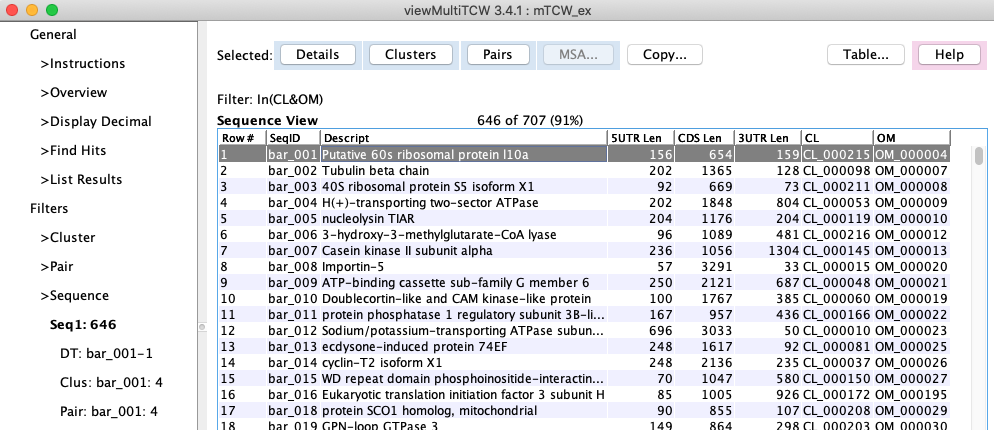
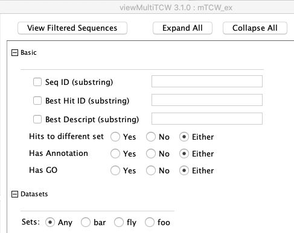

Sequences
Table
|
Filters
|
Columns
Sequence Table
The table below was created with the filter to show all Sequence that are found in clusters CL, HT, BB and OM.
Select a row followed by:
Pairs
: the table of pairs for the sequence will be shown (see lower left image).
Cluster
: the table of clusters for the sequence will be shown (see lower right image).
Align (selected)
: see
Align
.

Pairs for the selected sequence
Clusters for selected sequence
Sequence Filters
Go to top
Filter

Filter (Continue)
Sequence Columns
Go to top